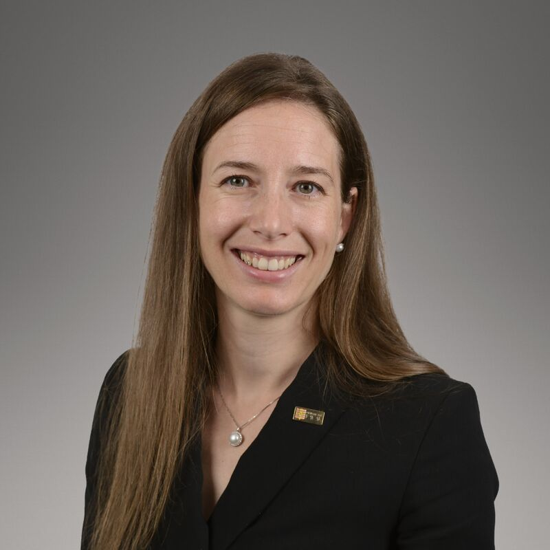
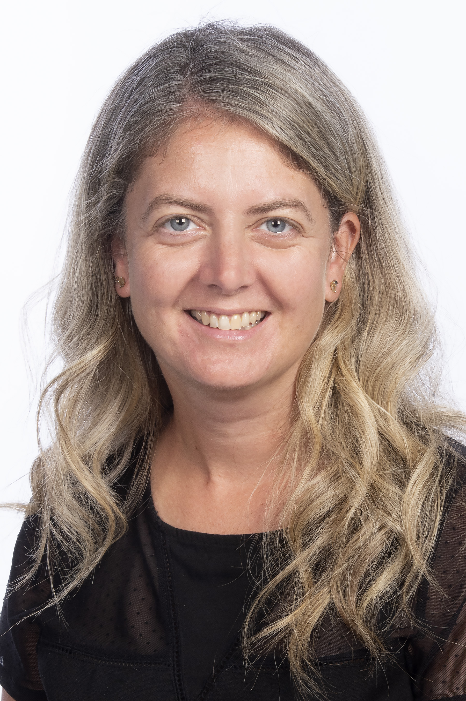
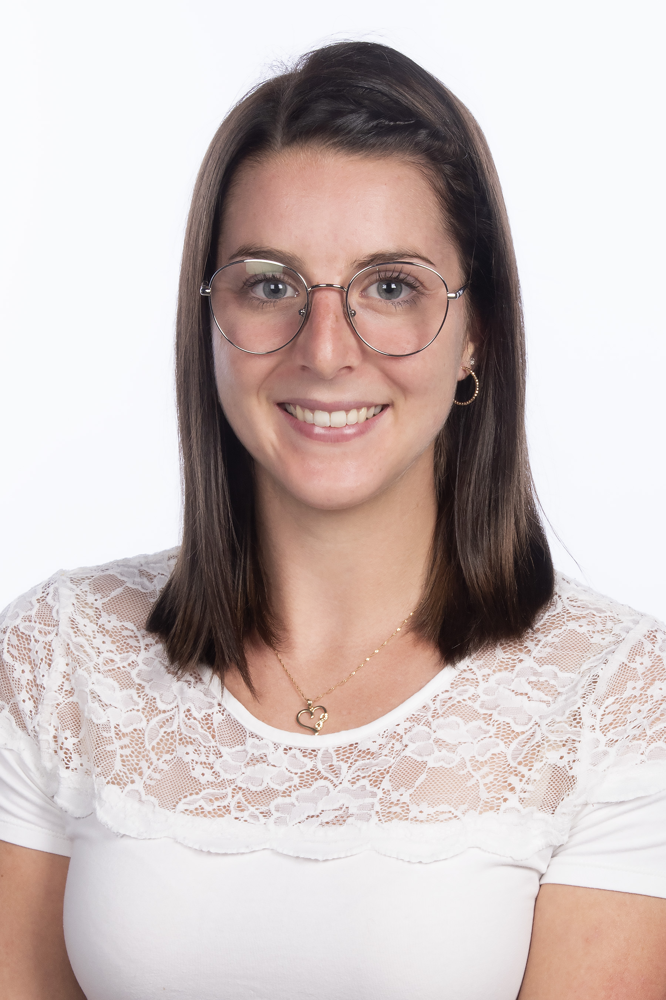
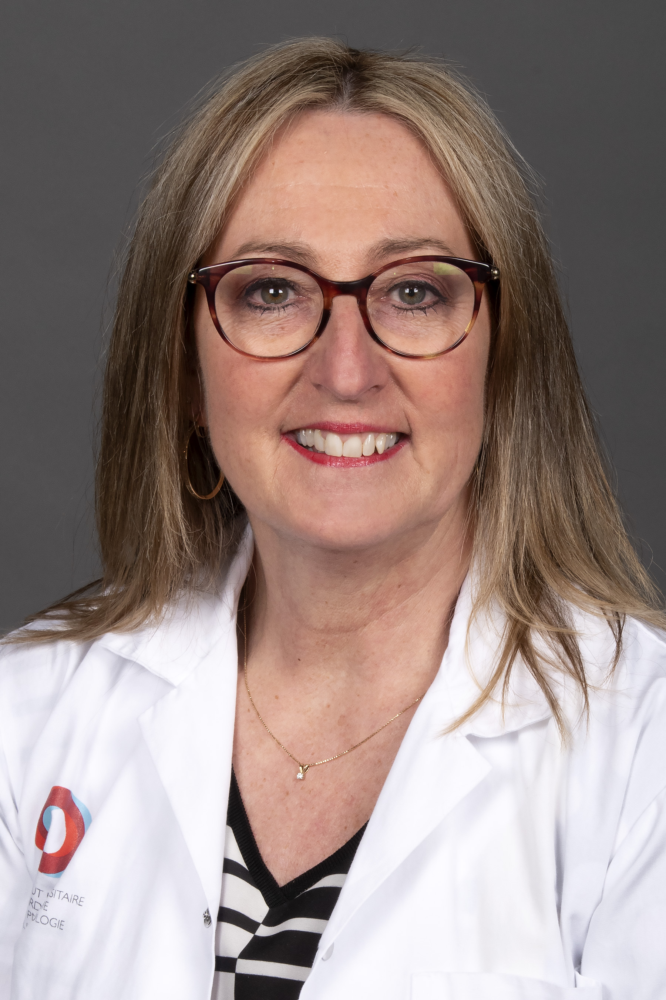
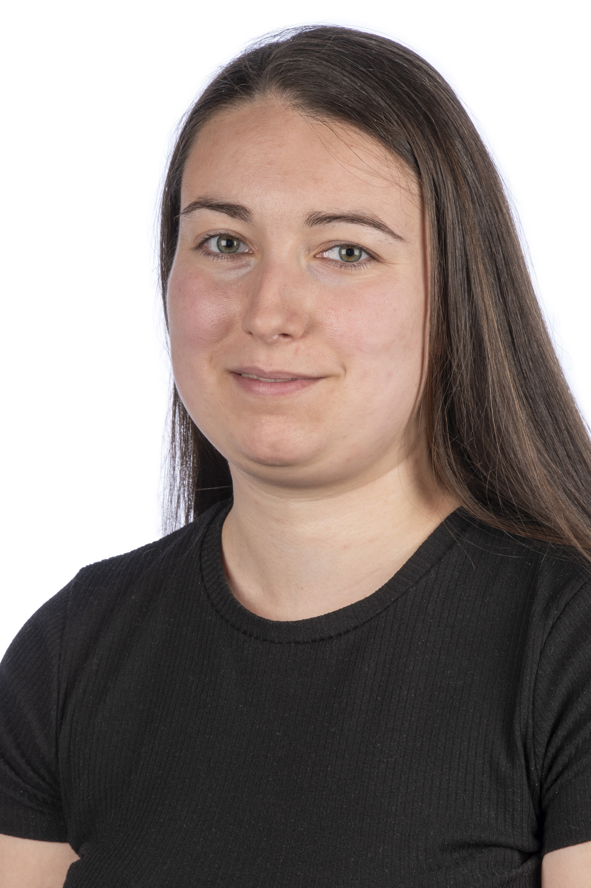
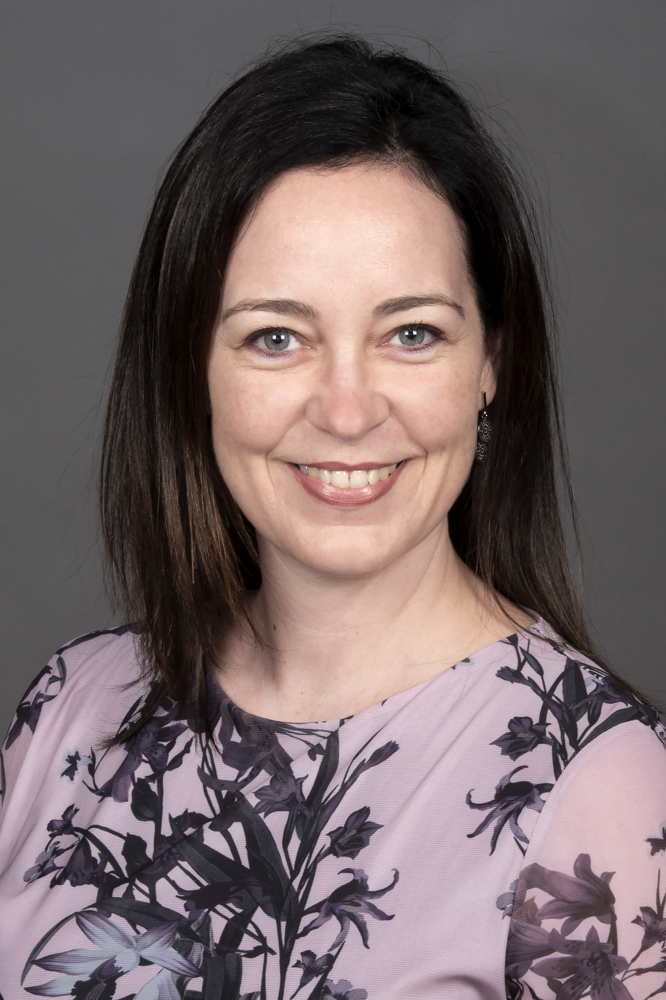
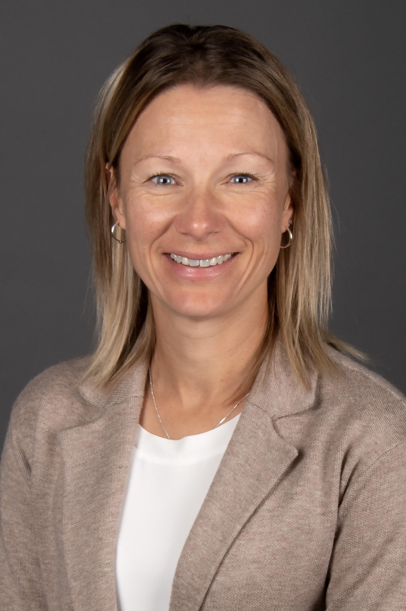
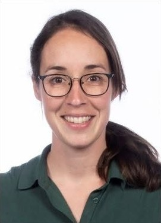
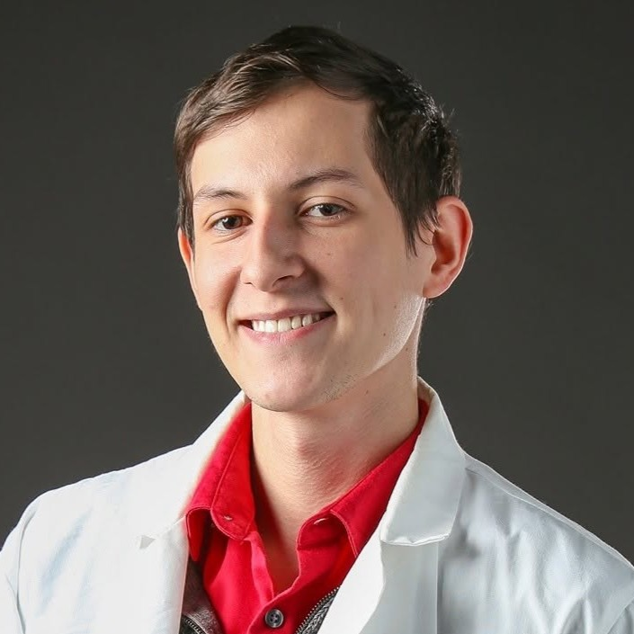
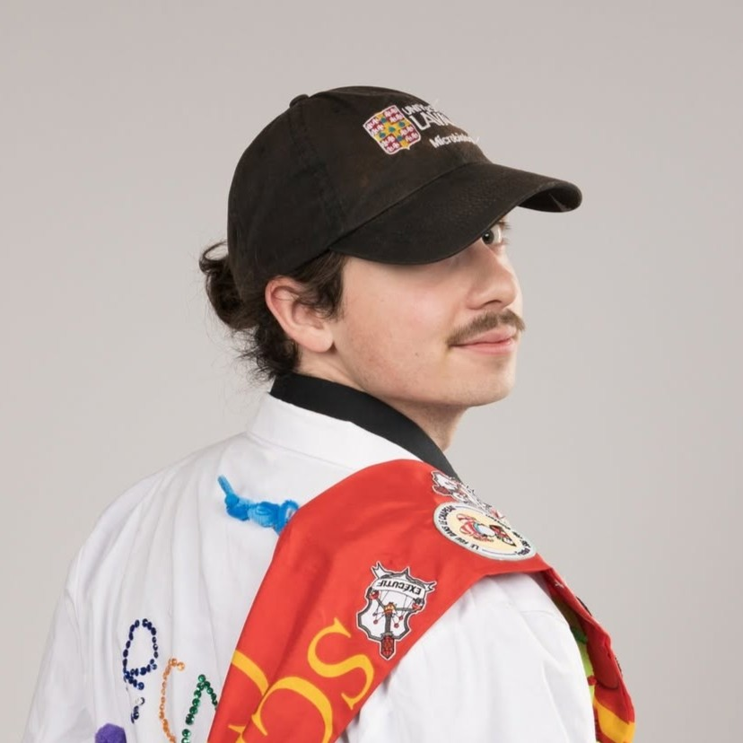

Notre équipe
Cliniciens, professionnels de recherche et étudiants travaillent ensemble, du chevet du patient au laboratoire, pour améliorer le diagnostic et les soins en asthme.

Dre Andréanne Côté, MD, M.Sc., FRCPC
Chercheuse principale et pneumologue-intensiviste
Pneumologue-intensiviste et clinicienne-chercheuse à l'IUCPQ-Université Laval depuis 2018, la Dre Côté consacre ses travaux à l'asthme. Elle cherche à identifier des marqueurs sanguins capables de prédire l'efficacité des traitements et l'évolution de la maladie, avec un objectif clair : offrir le bon traitement, au bon patient, au bon moment.
- Affiliations
- Centre de recherche de l'IUCPQ
Université Laval - Pratique clinique
- Clinique d'asthme, IUCPQ
- Expertise
- Asthme sévère, inflammation des voies aériennes, phénotypage
Professionnels de recherche
Coordination des études et soutien aux participants
-

Marie-Ève Boulay, M.Sc.
Professionnelle de recherche, depuis 2019
Forte de plus de 20 ans en recherche sur l'asthme, elle participe à l'élaboration des projets du laboratoire et à la rédaction des demandes de subvention et des articles. Elle encadre aussi les étudiants et les stagiaires, et veille à la gestion administrative du laboratoire.
-

Jakie Guertin, T.M., M.Sc
Professionnelle de recherche, depuis 2020
Elle coordonne les activités du laboratoire et gère la banque de données en asthme. Elle accompagne aussi les étudiants dans leurs projets et met en valeur nos résultats dans nos présentations.
-

Claudine Ferland, B.Sc.
Professionnelle de recherche, depuis 2020
Après plus de 20 ans en recherche fondamentale, elle se consacre à la recherche clinique depuis 2010. Elle coordonne nos projets en asthme et en ORL, assure le recrutement et le suivi des participants, et négocie les budgets de la plupart de nos projets.
-
KB
Keven Bergeron, M.Sc.
Professionnel de recherche, depuis 2023
Il coordonne les activités du laboratoire et assure le recrutement et le suivi des participants de la cohorte VapALERT.
-

Ann-Sarah Trudeau, M.Sc.
Professionnelle de recherche, depuis 2026
Elle participe à la gestion des projets cliniques du laboratoire, du recrutement jusqu'aux visites des participants.
Infirmières de recherche
Évaluations cliniques et accompagnement des participants
-

Annie Roy, inf. B.Sc.
Infirmière de recherche, depuis 2020
Elle coordonne des projets de recherche clinique en asthme, assure le recrutement et le suivi des participants, et contribue à l'élaboration de nouveaux projets.
-

Geneviève Boutin, inf.
Infirmière de recherche, depuis 2023
Elle assure le recrutement et le suivi des participants, coordonne des projets de recherche clinique en asthme et contribue à ceux en toux chronique.
-

Geneviève Parent-Racine, inf., M.Sc.
Infirmière de recherche, depuis 2022
Elle coordonne des projets de recherche clinique en asthme et en bronchoscopie interventionnelle, assure le recrutement et le suivi des participants, et participe à la rédaction des protocoles.
Soutien administratif
Le bon fonctionnement de l'équipe au quotidien
-
MB
Mélissa Bailey
Adjointe administrative
Elle veille au bon déroulement des activités administratives de l'équipe et offre un soutien quotidien aux chercheurs, aux employés et aux étudiants. Elle s'occupe notamment de l'accueil des nouveaux membres, de la coordination des accès, des suivis administratifs et de la gestion de divers dossiers financiers et documentaires.
Étudiantes et étudiants aux cycles supérieurs
Maîtrise et doctorat, Université Laval
-
Roy Olztherson Edouard
Doctorat (Ph.D.)
[Titre court du projet, p. ex. : biomarqueurs de l'inflammation dans l'asthme sévère.]
-

Piere-Alexandre Gagnon
Doctorat (Ph.D.), co-direction
[Titre court du projet, p. ex. : biomarqueurs de l'inflammation dans l'asthme sévère.]
-
AV
Anne-Julie Violette
Maîtrise (M.Sc.)
[Titre court du projet, p. ex. : biomarqueurs de l'inflammation dans l'asthme sévère.]
-

Olivier Thériault
Maîtrise (M.Sc.)
L'évolution du système immunitaire dans l'asthme chronique et l'auto-immunité (EVOLVE)
Stagiaires
Stages d'été et de premier cycle
Collaborateurs
Chercheurs et cliniciens avec qui nous travaillons
- Dr Louis-Philippe BouletPneumologie, IUCPQ-Université Laval
- Dre Krystelle GodboutPneumologie, IUCPQ-Université Laval
- Mathieu Morissette, Ph.D.Immunologie respiratoire, IUCPQ-Université Laval
- Nicolas Flamand, Ph.D.Inflammation et médiateurs lipidiques, IUCPQ-Université Laval
- Dr Simon CouillardPneumologie, Université de Sherbrooke
- Manali Mukherjee, Ph.D.Immunologie, Université McMaster
Anciens membres
Où sont-ils aujourd'hui?
- Jérémy Laroche, M.Sc. 2025Aujourd'hui : [poste, organisation]
- [Prénom Nom], Ph.D. [année]Aujourd'hui : [poste, organisation]
- [Prénom Nom], stagiaire [année]Aujourd'hui : [poste, organisation]
Envie de vous joindre à nous?
Nous recrutons à la maîtrise, au doctorat et pour des stages d'été.